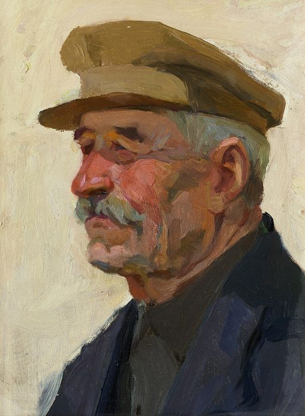

Bento Santiago (Bentinho)
Nome completo: Cosme da Silva
Apelido: Tio Cosme
Idade: Vida adulta, envelhece ao longo da história
Estado civil: Viúvo (sem informação do nome de sua esposa)
Personalidade: Conservador e tradicional, com valores familiares e decisões alinhadas.
Formação: Advogado, trabalhava com crimes.
Gostos e preferências: Se manter fora de problemas, manter uma postura neutra e amigável